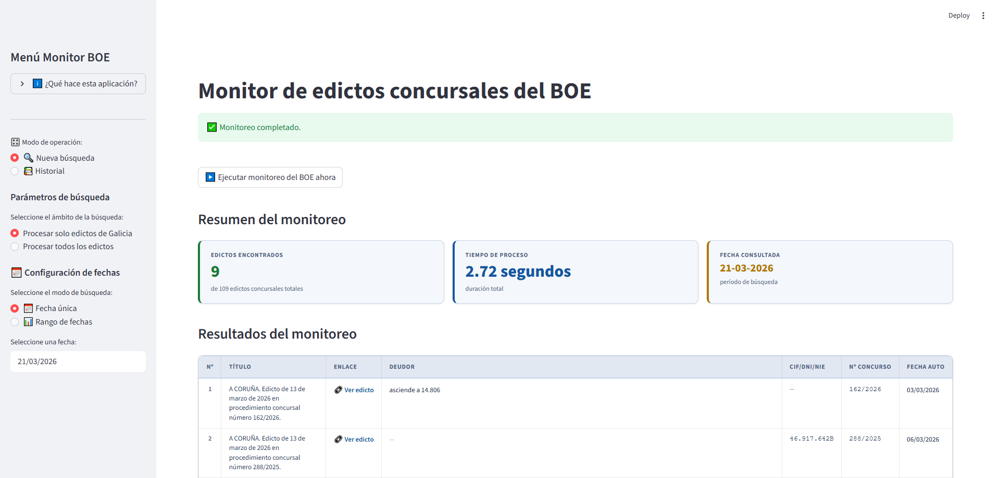
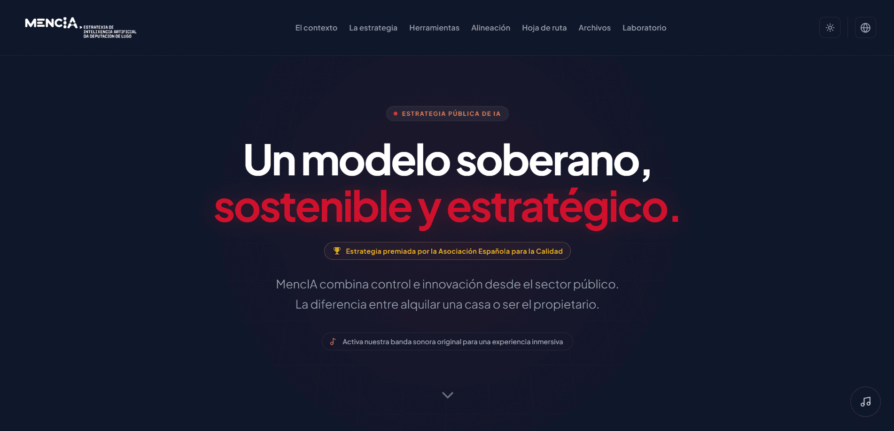
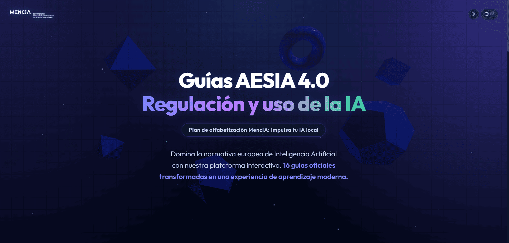
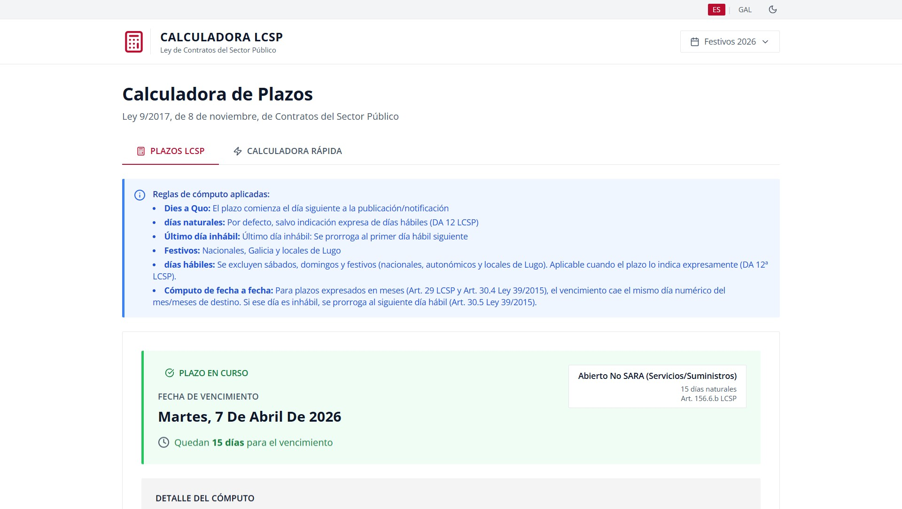

Jose Antonio
Arias Lombardero
Alfabetización en IA para la Administración Pública.
Ayudo a las administraciones públicas a cumplir con la obligación del Art. 4 del Reglamento europeo de inteligencia artificial, mediante planes de formación prácticos y adaptados a la realidad del empleado público.
Perfil profesional
Licenciado en Ciencias Políticas y de la Administración, con más de 15 años de experiencia en la Administración Local y una sólida especialización en Inteligencia Artificial aplicada al sector público.
Responsable del diseño e implementación en la Diputación Provincial de Lugo de un modelo de IA soberana de código abierto/pesos abiertos, con vistas a su extensión bajo la fórmula de Plataforma como Servicio (PaaS) a los municipios de la provincia con menos de 20.000 habitantes. Este modelo ha sido publicado en una revista académica indexada (IDP-UOC) y presentado en varios congresos nacionales de referencia en 2025-2026.
Certificado como Formador Ocupacional por la Xunta de Galicia, con amplia trayectoria en diseño e impartición de formación presencial y en línea dirigida tanto a perfiles técnicos como a responsables de entidades locales.
Mi objetivo es compartir conocimiento práctico y replicable sobre IA ética, eficiente y soberana y formar a equipos para un despliegue responsable de la IA en los próximos años.
Experiencia profesional y docente
Jefe de la Sección de Innovación y Participación Ciudadana
Diputación Provincial de Lugo- Diseño e implementación de la estrategia provincial de Inteligencia Artificial: stack de IA soberana de código abierto/pesos abiertos instalada en servidores propios y con vistas a su extensión mediante Plataforma como Servicio (PaaS) a municipios de la provincia de menos de 20.000 habitantes.
- Publicación como coautor en la Revista de Internet, Derecho y Política (IDP nº 43, oct. 2025) y en la Revista del Centro de Estudios Municipales y de Cooperación Internacional (CEMCI) (nº 66, 2025).
- Desarrollo de un portfolio de aplicaciones integradas en la estrategia de IA institucional: agente monitor del BOE, gestor inteligente de correo, plataforma formativa sobre las Guias de la AESIA, calculadora de plazos de la LCSP.
- Impartición de formación en materia de fondos europeos y transformación digital a empleados públicos de la provincia de Lugo y del INAP.
- Impartición de formación en materia de Inteligencia Artificial para empleados púbicos de la provincia de Lugo (pro.)
- Coordinación del Departamento de Fondos Europeos y la Agencia de la Energía provincial; gestión de financiación FEDER, FSE y NextGenerationEU/PRTR para proyectos de innovación, eficiencia energética, empleo, bienestar y medioambiente.
- Participación como ponente en diferentes congresos nacionales de innovación pública en 2025-2026: Congreso NovaGob 2025, Jornadas sobre la IA en el mundo local (Local.IA), II Congreso Foro GRC (Madrid, premio a la mejor comunicación), etc.
Técnico especialista en contratación pública
Consorcio Provincial de Lugo para la prestación del servicio contra incendios y salvamento- Gestión de licitaciones: Tramitación integral de expedientes de contratación de servicios y suministros. Modificados, prórrogas, devolución de garantías.
- Asesoramiento Jurídico-Técnico: Redacción de pliegos de cláusulas administrativas (PCA) y prescripciones técnicas (PPT); emisión de informes jurídico-administrativos especializados.
- Digitalización de procesos: Puesta en marcha y consolidación de la contratación electrónica en la entidad.
- Mesas de contratación: Preparación, gestión y retransmisión online de sesiones para garantizar la transparencia del proceso.
Asesor técnico - Servicio de contratación y fomento
Diputación Provincial de Lugo- Tramitación de expedientes de contratación pública, emisión de informes jurídico-administrativos y especialización en licitación electrónica y contratos de publicidad institucional.
Especialización en inteligencia artificial
menu_book Publicaciones académicas
-
article
Arias Lombardero, J.A., Rivera Capón, P. y Fariña Verea, N. (2025). «Gobernanza algorítmica local: diseño e implementación de un stack de IA soberana en código abierto para entidades supramunicipales». Revista de Internet, Derecho y Política (IDP), nº 43. Universitat Oberta de Catalunya (UOC). ISSN 1699-8154.
-
article
Arias Lombardero, J.A. (2025). «Gobierno local inteligente y soberano: una propuesta estratégica para la implementación de IA de código abierto en la provincia de Lugo». Revista del Centro de Estudios Municipales y de Cooperación Internacional (CEMCI), nº 67. ISSN 1989-2470.
emoji_events Premios y reconocimientos
-
military_tech
Premio a la mejor comunicación - II Foro GRC (Madrid, feb. 2026), Asociación Española para la Calidad (AEC). Ponencia: MencIA: Soberanía Tecnológica Realista. Un modelo integral de Gobierno Riesgo y Cumplimiento (GRC) para la IA en el Sector Público.
-
workspace_premium
Finalista del prompt-a-thon Desafío ALIA (Madrid, dic. 2025), SEDIA. Seleccionado entre los 30 mejores de España.
campaign Ponencias y conferencias (2025-2026)

Retos de la Transformación Digital en las AAPP de Galicia
SOCINFO digital • Santiago de Compostela, mar. 2026
Ponencia: El modelo de Lugo. Hacia una IA soberana y realista.

II Congreso Foro GRC
Asociación Española para la Calidad (AEC) • Madrid, feb. 2026
Ponencia: MencIA: Soberanía Tecnológica Realista. Un modelo integral de Gobierno Riesgo y Cumplimiento (GRC) para la IA en el Sector Público.


hub Comunidades y redes de innovación en IA
-
groups
Miembro de la Comunidad de IA de Código Abierto (SEDIA - Ministerio para la Transformación Digital y de la Función Pública). Inscrito en su Red de Embajadores.
apps Portfolio de aplicaciones desarrolladas con IA
Todas las herramientas de este portfolio han sido conceptualizadas, desarrolladas y desplegadas en entornos cloud (Vercel / Netlify), contando con repositorios propios en GitHub y documentación técnica (README) para facilitar su escalabilidad.

Monitor BOE
Sistema automatizado para la monitorización, extracción y análisis de publicaciones del Boletín Oficial del Estado (BOE) utilizando técnicas de procesamiento de lenguaje natural.

Landing MencIA
Prueba de lanzamiento de la landing page de MencIA-Estrategia de Inteligencia Artificial de la Diputación de Lugo (en desarrollo)

Guias AESIA 4.0
Plataforma de aprendizaje interactiva de las guías prácticas para el cumplimiento del RIA publicadas por la AESIA. Incluye flashcards, cuestionarios, glosario y juegos educativos. (en desarrollo)

Calculadora LCSP Lugo
Herramienta web para el cálculo automatizado de plazos administrativos establecidos en la Ley 9/2017, de Contratos del Sector Público (LCSP), adaptada al calendario festivo de Lugo y la Comunidad Autónoma de Galicia (en desarrollo)
Formación académica
Licenciado en Ciencias Políticas y de la Administración
Especialidad en Administración Pública
Universidad de Santiago de Compostela (USC) · 1996-2001
Nivel MECES 3 (equivalencia Máster) / Nivel 7 EQF
Certificado de profesionalidad de formador ocupacional
Xunta de Galicia - Dirección Xeral de Formación e Colocación · 2003
Formación en inteligencia artificial
local_library Cursos especializados
-
menu_book
Desafíos y oportunidades de la IA: modelos de gobernanza y herramientas generativas para la innovación pública - CLAD-SEGIB (MOOC Internacional) • 52 horas • 2026
-
menu_book
Inteligencia artificial aplicable a las entidades locales - CEMCI / IAAP • 175 horas • 2025
-
menu_book
Aplicación práctica de la IA en la Gestión Pública Local - FEGAMP / EGAP • 30 horas • 2025
-
menu_book
Elementos de la IA - UNED • 50 horas • 2025
-
menu_book
ChatGPT Prompt Engineering for Developers - OpenAI / DeepLearning.AI • 2025
-
menu_book
Essentials of Prompt Engineering - Amazon Web Services (AWS) • may. 2025
-
menu_book
Introducción a la IA y Prompt Engineering - FEMP / Founderz Business School • 2025
verified Certificaciones (selección)
-
workspace_premium
Introduction to Model Context Protocol-Anthropic (mar. 2026)
-
workspace_premium
Google AI Professional Certificate - Google (mar. 2026). 7 cursos: AI Fundamentals, AI for Brainstorming and Planning, AI for Research and Insights, AI for Writing and Communicating, AI for Content Creation, AI for Data Analysis, AI for App Building.
-
workspace_premium
Google AI Essentials - Google (mar. 2026). 5 cursos: Introduction to AI, Maximize Productivity With AI Tools, Discover the Art of Prompting, Use AI Responsibly, Stay Ahead of the AI Curve.
-
workspace_premium
Accelerate Your Job Search with AI - Google (mar. 2026). 4 cursos: Uncover Your Transferable Skills with AI, Plan Your Job Search with AI, Manage Your Job Applications with AI, Prepare and Practice for Interviews with AI.
-
workspace_premium
Microsoft Learn (7 módulos): IA responsable, estrategia de IA, sostenibilidad e IA en el sector público (feb.-sep. 2025)
-
workspace_premium
Google Cloud Skills Boost: Introduction to Generative AI, Introduction to Large Language Models, Introduction to Responsible AI (feb. 2025).
Competencias y herramientas
record_voice_over Habilidades pedagógicas
- Diseño e impartición de formación presencial y e-learning (Certificado de Formador Ocupacional; 180 h de formación de formadores TIC, 2011)
- Pedagogía activa y aprendizaje basado en proyectos; divulgación tecnológica práctica para no expertos
- Experiencia docente con perfiles mixtos: técnicos, jurídicos y directivos de la Administración Pública
memory Inteligencia Artificial y tecnología
- IA soberana y open-source: LLMs open-source/weight, RAG, Ollama, arquitecturas on-premise
- IA generativa: Gemini, ChatGPT, Claude, NotebookLM, Google AI Studio, Streamlit, Antigravity, n8n.
- Ética de la IA, Reglamento Europeo de IA, GRC (Gobernanza, Riesgo y Cumplimiento), Green AI
- Fondos Europeos: FEDER, FSE, NextGenerationEU/PRTR
- Contratación del sector público
cloud_done Despliegue y ecosistema tech
- Control de versiones y repositorios: GitHub
- Despliegue web y cloud hosting: Vercel, Netlify
- Documentación técnica y escalabilidad de proyectos
language Idiomas
- Castellano - Nativo
- Gallego - CELGA 4 y título de Lenguaje Administrativo Gallego de Nivel Medio (Xunta de Galicia)